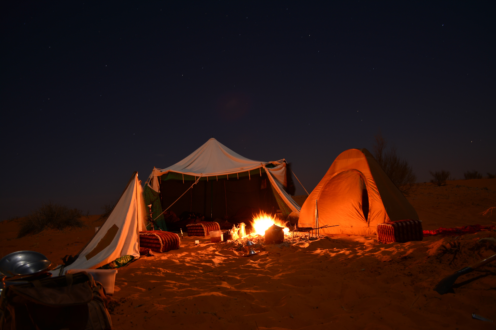
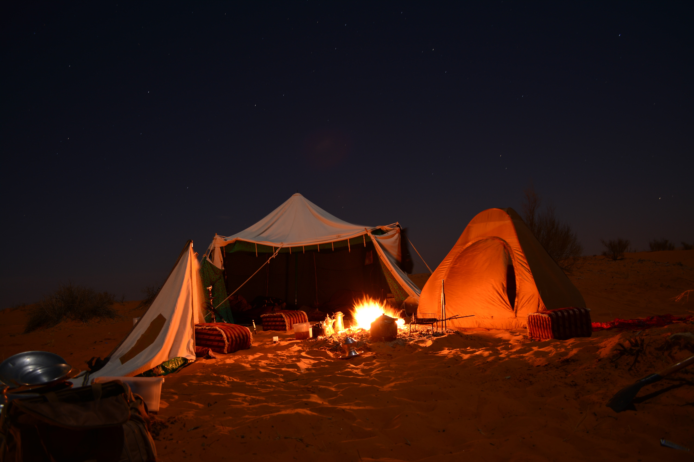

Riyadh is a city of contrasts, where the ancient and the modern seamlessly blend together.
The towering skyscrapers reach for the sky, while the traditional mud-brick houses huddle together in the old quarters.
The city is a vibrant tapestry of culture and tradition, where the call to prayer echoes through the streets and the scent of spices and incense fills the air.
The desert sands may be just a stone's throw away, but the city is a lush oasis, dotted with parks and gardens.
It's a city that never stops moving, pulsing with energy, where opportunities are as endless as the horizon.
Jeddah City
Jeddah is a city of sea and sun, where the Red Sea kisses the shore and the palm trees sway to the rhythm of the waves.
It's a place where the past and the present converge, where the old stone buildings stand tall alongside the sleek, modern architecture.
The city is a melting pot of cultures, where the sweet aroma of Arabic coffee and the scent of cuisines mingle in the air.
The winding, narrow streets of the historic Al-Balad neighborhood offer a glimpse into the city's rich history, while the bustling Corniche promenade is a hub of activity and entertainment.
Jeddah is a city that embraces life, where the sound of laughter and the music of the sea are never far away.
Abha City
Abha, nestled in the heart of the Asir Mountains, is a city of natural beauty, where the air is crisp and clear, and the scenery is nothing short of breathtaking.
The city is surrounded by terraced farmlands, cascading waterfalls, and lush greenery, it's as if nature has painted the city with her own brush. The traditional architecture of Abha is a marvel to behold, with its unique design, that reflects the harmony between the city and its surroundings.
The city is a treasure trove of culture, where the traditional art and music are still alive and well, and the people are known for their warmth and hospitality.
Abha is a city that will take your breath away and leave you enchanted forever.
Alula Village
Al Ula is a village steeped in history and mystery, where the sands of time have carved out ancient wonders and kept them hidden for centuries.
It's a place where the past and the present coexist, where the ancient tombs, rock engravings, and ruined citadels tell the story of a civilization long gone, yet still present in every stone.
The village is a living museum, where every step you take, uncovers a new chapter of history. The natural beauty of the area is a sight to behold, with the rugged mountains and the vast desert, it's as if the earth has created a canvas of colors and textures.
Al Ula is a place where one can escape the hustle and bustle of the modern world and find solace in the embrace of the past.
Eastern Province
The Eastern Province of Saudi Arabia is a land of contrasts, where the desert sands meet the crystal waters of the Arabian Gulf.
It's a place where history and tradition are etched into every rock and dune, and the modern world is embraced with open arms. The cities of the Eastern Province, such as Dammam, Al Khobar, and Dhahran, are bustling metropolises, filled with skyscrapers and cutting-edge technology.
But just a short drive away, you'll find quaint fishing villages and oases, where time seems to have stood still.
The Eastern Province is a land of opportunity, where the oil industry and the traditional Bedouin way of life coexist in harmony.
It's a place that will surprise and delight you at every turn.
Rijal Alma Village
Rijal Alma is a village like no other, a hidden gem tucked away in the mountains, where time seems to stand still.
The village is a maze of winding cobblestone streets, lined with traditional houses, their white-washed walls adorned with intricate geometric patterns.
The village is surrounded by terraced farmlands, where the locals grow their crops and tend to their livestock, just like their ancestors have done for centuries.
The villagers are proud of their heritage and traditions, and they take great care to preserve them. The village is a haven of peace and tranquility, where the sound of running water from the nearby stream and the chirping of the birds are the only sounds you'll hear.
Rijal Alma is a village that will transport you to a different world, where the beauty of simplicity and tradition reigns supreme.
 
